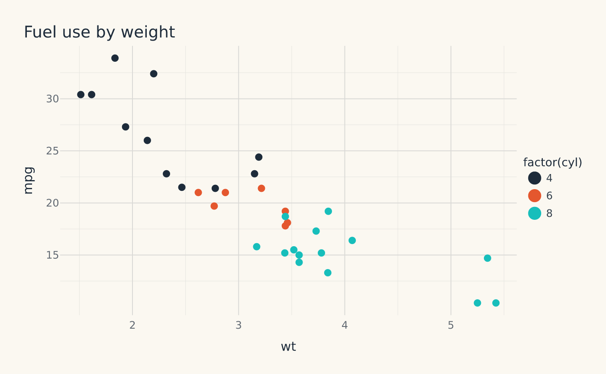

theme_brand() themes a plot from a brand.yml
file, the format Quarto uses for _brand.yml. The brand's colours, palette
and fonts go onto a base preset (theme_minimal() by default):
Usage
theme_brand(
plot,
brand = NULL,
mode = c("light", "dark"),
base = theme_minimal,
base_size = 11,
fonts = TRUE,
palette = TRUE,
fetch_fonts = FALSE
)Arguments
- plot
A PlotSpec.
- brand
The brand:
NULL(default) to find it (see below), a path to a brand.yml file, abrand_ymlobject frombrand.yml::read_brand_yml(), or a list withlightanddarkentries (each a path or abrand_ymlobject), like Quarto'sbrand: {light:, dark:}.- mode
"light"(default) or"dark": which brand to use when there are both (in a Quarto document with light and dark brands, or alist(light =, dark =)). With a single brand it is used as given.- base
A theme preset to start from, such as
theme_minimal()(default),theme_bw()ortheme_classic().- base_size
Base text size in points, as for the presets.
- fonts
Use the brand's font families?
FALSEkeeps the base preset's.- palette
Use the brand's colours as the default discrete palette?
- fetch_fonts
Download or register brand fonts that are not installed (see the Fonts section)? Default
FALSE.
Value
The modified PlotSpec.
Details
backgroundbecomes the page (plot and panel background, and thepaperofelement_geom());foregroundbecomes the ink of titles and unmapped marks;primaryis theaccentof smooths and contours. The greys in between (text, axis text, gridlines, caption) are blends of foreground and background, as in brand.yml's owntheme_brand_ggplot2()(axis text and caption a little darker, so they keep WCAG AA contrast), and a dark brand gives a dark plot.The discrete colour palette is
color.palettein file order, or else the brand'sprimary,secondary,tertiary,success,info,warninganddangercolours (those that are set and distinct). Entries in the background colour are left out. When a scale has more levels than the brand has colours, vellumplot's own qualitative colours follow. Ascale_*()palette still wins.typography.basesets the family and weight of all text, andtypography.headingsthe family of the title, subtitle and facet strips and the weight of the title and strips. Weights such as 300 (light) orsemi-boldpick that face of a family that has it; axis and legend titles and labels and the caption stay at least regular (400) so they stay legible.
Elements the base preset leaves out (the axis ticks of theme_minimal(),
say) stay out.
Where the brand comes from
brand = NULL finds the brand the way Quarto does. Inside a Quarto render
it is the brand Quarto resolved for the document (a project _brand.yml,
or brand: in _quarto.yml or the front matter, including light and dark
brands; brand: false means no brand). Outside Quarto it is the file named
by the BRAND_YML_PATH environment variable, or the first _brand.yml
found in the working directory or a parent of it (also in a brand/ or
_brand/ subdirectory). Reading a file needs the brand.yml package.
Using the brand for every plot
Set options(vellumplot.brand = TRUE) (in a document's setup chunk, say) to
theme every plot that has no theme of its own with theme_brand(), found
as for brand = NULL. options(vellumplot.brand = "path/to/_brand.yml")
names the file. A plot with an explicit theme (theme_bw(), a
theme_brand() of its own) keeps it; theme() tweaks on an unthemed plot
apply on top of the brand. The first branded plot of a session says which
file it used. The option is off by default, so existing documents do not
change their look. Add options(vellumplot.brand.fetch_fonts = TRUE) to
fetch missing brand fonts there, as fetch_fonts = TRUE does.
Fonts
A brand font that is not installed falls back to the default family, with
a warning. fetch_fonts = TRUE installs it for the session first: a
google or bunny font is downloaded with systemfonts::require_font()
(this needs the network), and a file font is registered from the brand's
directory with systemfonts::add_fonts(). Fonts registered this way are
used for drawing and measuring text in every output format.
Examples
brand <- tempfile(fileext = ".yml")
writeLines(c(
"color:",
" palette:",
" ink: '#1d2b3a'",
" coral: '#e4572e'",
" teal: '#17bebb'",
" gold: '#ffc914'",
" foreground: ink",
" background: '#fbf8f1'",
" primary: coral"
), brand)
if (requireNamespace("brand.yml", quietly = TRUE)) {
vplot(mtcars) |>
mark_point(x = wt, y = mpg, color = factor(cyl)) |>
labs(title = "Fuel use by weight") |>
theme_brand(brand)
}
